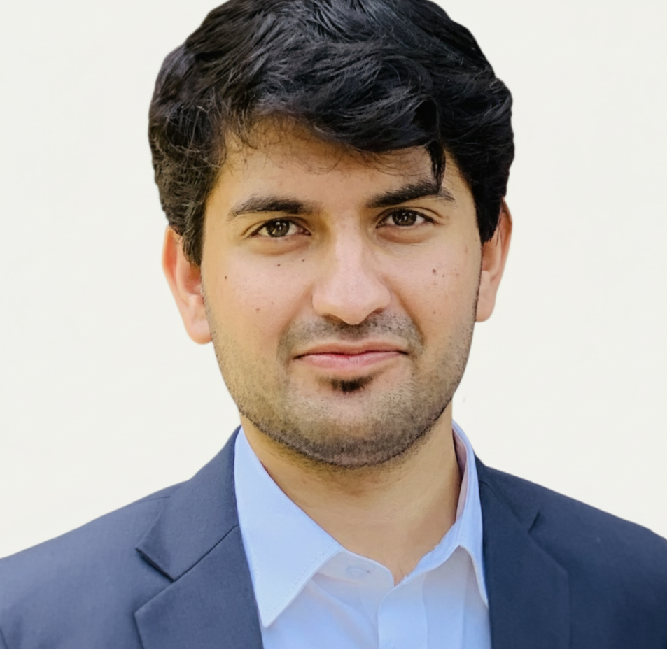

Hi, I'm Sannaan
Ph.D. Student - Electrical & Computer Engineering

About Me
I am currently a PhD student in the Mike Wiegers Department of Electrical & Computer Engineering at Kansas State University (K-State), working under the supervision of Prof. Samee U. Khan, Fiedler Distinguished Chair in Electrical and Computer Engineering.
My research focuses on developing Trustworthy Quantum AI Systems, with particular interest in robust, secure, privacy-preserving, fair, and explainable intelligent systems across classical, quantum, and hybrid computational paradigms. Ultimately, my work seeks to advance intelligent systems that unite computational capabilities with the trustworthiness necessary for reliable real-world deployment under operational and structural constraints.
My PhD is supported by the National Science Foundation (NSF).
Academic Journey
Ph.D.
CurrentKansas State University (K-State)
Research Area: Trustworthy Quantum AI Systems
Fiedler Distinguished Chair Professor & Head, Mike Wiegers Department of Electrical & Computer Engineering
News & Updates
-
Aug 2026
Started Ph.D. at K-State
Began my PhD in ECE under the supervision of Dr. Samee Khan, where I will be researching Trustworthy Quantum AI Systems. My research is supported by the NSF.
-
May 2026
Thesis Defense
Successfully defended my M.S. thesis, "Manipulating Algorithmic Fairness and Post-hoc Explainability".
-
Dec 2025
CPIF Project
Led the Comparative Pandemic Intelligence Framework (CPIF) project in collaboration with health experts from Development Synergie using extensive local data.
-
Nov 2025
TIRA paper upgraded to Oral at NeurIPS-W 2025
Our paper "The Unseen Hand Manipulating Model Fairness and SHAP with Targeted Identity Re-Association Attacks" has been upgraded to an Oral. The work has also been selected for presentation at the AE Joint Poster Session at NeurIPS.
-
Sep 2025
NeurIPS-W 2025 Acceptances
Our works on model fairness and training-time explainability were accepted to NeurIPS 2025 Workshops.
-
Jun 2025
Best Paper Explanation Award
We have been awarded the Best Paper Explanation Award for our presentation on Anthropic's "On the Biology of a Large Language Model".
Publications
For a complete and up-to-date list of my publications, please visit my Google Scholar profile .
Academic Service
Reviewer
- WCCI IJCNN
- NeurIPS Workshops
- ICIP